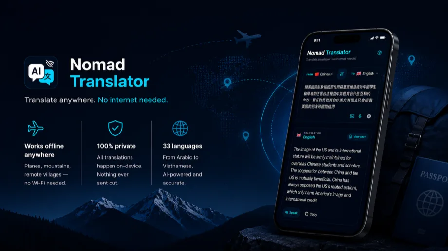

Notfall-Übersetzung auf Reisen
Praktischer Ratgeber: Notfall-Übersetzung auf Reisen. So übersetzt du Menüs, Schilder, Fotos, Screenshots und kurze Gespräche auf Reisen auch ohne zuverlässiges Internet.

Wann taucht dieses Problem auf?
Dieses Thema taucht oft auf, wenn Reisende Notfall-Übersetzung auf Reisen in Situationen wie Reisen mit schwachem Empfang, Restaurants, Flughäfen, Bahnhöfen, Schildern, Speisekarten, Fotos und kurzen Gesprächen brauchen. Dann zählt nicht nur Übersetzungsqualität, sondern auch Tempo, Lesbarkeit und Offline-Zuverlässigkeit.
So nutzt du Nomad Translator für diesen Ablauf
- Lade das passende Sprachpaket vor der Reise, solange WLAN stabil ist.
- Teste Notfall-Übersetzung auf Reisen mit einem kurzen Satz oder einem Foto, bevor du es unterwegs brauchst.
- Nutze Text für genaue Eingaben, Sprache für kurze Fragen und die Kamera für gedruckte Inhalte.
- Halte Sätze kurz und konkret, damit die Übersetzung im echten Gespräch leichter zu prüfen ist.
- Speichere Nomad Translator als Teil deines Reise-Kits neben Karten, Tickets und Hoteldaten.
Worauf du achten solltest
- Offline-Übersetzung ist besonders nützlich, wenn du schnell handeln musst und das Netz unsicher ist.
- Kameraübersetzung hilft bei Speisekarten, Schildern, Etiketten, Warnungen und Ticketautomaten.
- Eine gute Reiseübersetzer-App sollte schnell öffnen, gut lesbar sein und einhändig funktionieren.
Warum Nomad Translator zu diesem Anwendungsfall passt
Nomad Translator ist für praktische Übersetzung unterwegs gebaut: Sprachpaket einmal laden, Text und Sprache auf dem Gerät übersetzen, Kamera für gedruckte Inhalte nutzen und das Ergebnis schnell genug anzeigen, um im echten Moment zu reagieren.
Häufige Fragen
Funktioniert Nomad Translator ohne Internet?
Ja. Nachdem ein Sprachpaket geladen wurde, kann die Übersetzung auf dem Gerät laufen, ohne Text, Stimme oder Bild an einen Server zu senden.
Ist das besser als Roaming?
Für viele Reisen ja. Offline-Übersetzung reduziert Probleme mit schwachem Empfang, Roaming-Kosten und langsamen Ladezeiten.
Warum ist dieses Thema wichtig?
Notfall-Übersetzung auf Reisen ist ein häufiger Suchbegriff, wenn Reisende vor Ort schnell verstehen müssen, was vor ihnen steht.
Nomad Translator laden
Bereite einen Offline-Übersetzer vor der nächsten Reise vor, damit du nicht von Empfang oder Roaming abhängig bist.
Im App Store laden